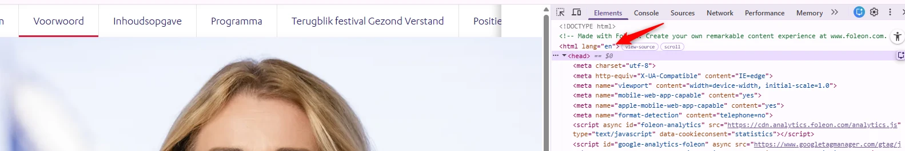
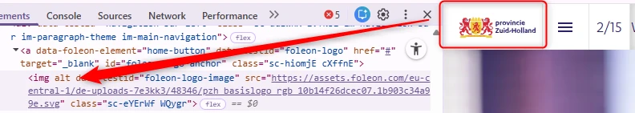
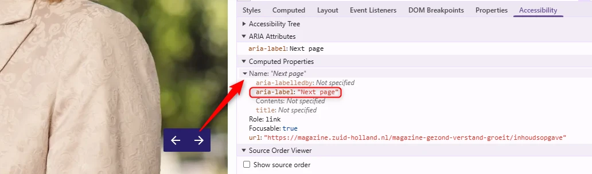
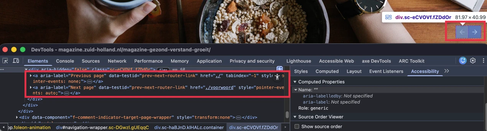
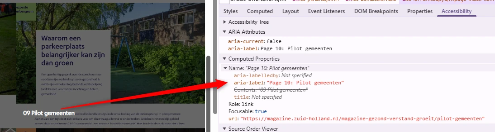

#1 - Onjuiste taalinstelling van pagina

De primaire taal van de website is Nederlands, maar het lang-attribuut op alle pagina's is onjuist ingesteld op "en". Schermlezers gebruiken deze code om de juiste uitspraakregels toe te passen. Wanneer de taal van de pagina niet correct is vastgelegd, wordt de inhoud met onjuiste uitspraakregels voorgelezen. Daardoor is de tekst lastiger te begrijpen voor bezoekers die schermlezers gebruiken.
Oplossing:
Zorg ervoor dat de taal van de pagina is ingesteld op Nederlands ( lang="nl" ), zodat hulpsoftware de inhoud op de juiste manier kan voorlezen. Vergeet niet om de taalcode (lang="en") toe te voegen voor specifieke teksten die in het Engels moeten worden uitgesproken, zoals "Happy employees" op pagina https://magazine.zuid-holland.nl/magazine-gezond-verstand-groeit/de-nieuwe-lunchcultuur, "Healthy Society" op pagina https://magazine.zuid-holland.nl/magazine-gezond-verstand-groeit/gezonde-samenleving en enkele andere.
#2 - Logo heeft geen tekstalternatief

Het logo "Provincie Zuid-Holland" bovenaan de website heeft geen tekstalternatief. Het alt-attribuut is leeg. Informatieve afbeeldingen, zoals een logo, moeten altijd een alt-tekst hebben waarin de volledige tekst is opgenomen die in het logo zichtbaar is. Zonder dit alternatief is de informatie in het logo niet beschikbaar voor bezoekers die de afbeelding niet kunnen waarnemen. Het logo functioneert ook als link, waardoor de linkbestemming niet duidelijk is (2.4.4) en de link geen toegankelijke naam heeft (4.1.2).
Oplossing:
Zorg ervoor dat het logo is voorzien van een tekstalternatief (alt-tekst) waarin de volledige tekst van het logo is opgenomen. Hierdoor krijgt de bijbehorende link ook een duidelijke bestemming en toegankelijke naam.
#3 - Onjuiste taal van toegankelijke namen

Onderaan elke pagina staan iconen met pijlen die dienen voor navigatie tussen de pagina's. Deze hebben aria-label-attributen met Engelstalige tekst: "Previous page" en "Next page". Schermlezers lezen deze labels voor volgens de uitspraakregels van de primaire taal van de pagina, in dit geval Nederlands. Omdat de teksten van de aria-label-attributen Engelstalig zijn, worden deze met onjuiste uitspraakregels voorgelezen. Daardoor kan dit leiden tot verwarring en verminderde begrijpelijkheid voor bezoekers die schermlezers gebruiken. Andere voorbeelden zijn:
- "Skip to main content"-link op alle pagina's
- Het woord "Pages" en de X-knop met de toegankelijke naam "Close" die bovenaan het menu worden weergegeven nadat op de hamburgerknop is geklikt
- X-knop ("Close") in hetzelfde scherm
- Knop met een pijl naar beneden op alle pagina's ("Scroll down button")
Oplossing:
Vertaal de teksten en de aria-label-attributen naar het Nederlands, zodat schermlezers deze correct kunnen voorlezen.
#4 - Groepering links ontbreekt

Op de pagina's van de website staan navigatielinks met pijliconen om tussen de pagina's te wisselen. Dit is een groep links die visueel als groep worden gepresenteerd, maar deze groepering is niet terug te vinden in de HTML-structuur.
Voor een ziende bezoeker is zichtbaar dat deze links bij elkaar horen. Deze relatie is niet vastgelegd in de HTML-code.
Oplossing:
Leg de relatie tussen de links vast in de code. Plaats de links bijvoorbeeld in een ul-element met meerdere li-elementen of binnen een nav-element. Daardoor is ook voor hulpsoftware duidelijk dat de links bij elkaar horen.
Alt-attribuut is leeg bij een informatieve afbeelding
Onderaan de meeste pagina's staat een informatieve afbeelding "Gezond verstand", maar het alt-attribuut is leeg. Als een informatieve afbeelding wordt opgenomen met een img-element, mag het alt-attribuut niet leeg zijn.
Oplossing:
Voeg een beschrijvende alternatieve tekst toe aan het alt-attribuut en neem alle zichtbare tekst erin op - "Gezond verstand".
#5 - Onjuiste beschrijving van een knop
Bovenaan de pagina's is een hamburgerknop aanwezig. Deze knop opent het menu, maar de toegankelijke naam is "Index", wat de functie niet correct beschrijft.
De toegankelijke naam van de knop beschrijft niet wat de knop doet. Daardoor is voor bezoekers die een schermlezer gebruiken niet duidelijk welke actie wordt uitgevoerd.
Oplossing:
Zorg ervoor dat de toegankelijke naam van de knop de functie duidelijk beschrijft.
#6 - Zichtbare linktekst ontbreekt in toegankelijke naam

Vanaf alle pagina's wordt na een klik op de hamburgerknop een pagina-overzicht geopend met klikbare afbeeldingen van de magazinepagina's. Vanaf de afbeelding "09: Pilot gemeenten" wijkt het paginanummer in de linknaam af van wat visueel wordt weergegeven. Bijvoorbeeld: de zichtbare tekst is "09: Pilot gemeenten" en de toegankelijke naam, aangeleverd via het aria-label, is "Page 10: Pilot gemeenten". Als de zichtbare linktekst niet overeenkomt met de toegankelijke naam, kan dit problemen veroorzaken voor spraakbesturingssystemen. Door de gebruiker uitgesproken opdrachten activeren zo'n link mogelijk niet.
Oplossing:
Pas in dit geval het aria-label aan zodat de zichtbare tekst daarin wordt opgenomen, bijvoorbeeld: aria-label="Pagina 09: Pilot gemeenten".